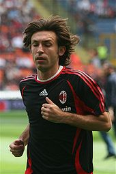

Nell'estate 2001 Pirlo viene acquistato dal Milan a titolo definitivo per circa 35 miliardi di lire(nell'ambito della stessa operazione Dražen Brnčić passa ai nerazzurri). A causa degli infortuni degli incontristi Gennaro Gattuso e Massimo Ambrosini, Pirlo, d'accordo con l'allenatore Carlo Ancelotti, è ritornato a giocare nella stessa posizione che aveva al Brescia, cioè davanti alla difesa.[51] Il modulo rossonero in questa stagione è stato il 4-3-1-2.L'esordio in maglia rossonera è avvenuto il 20 settembre 2001 nella partita di Coppa UEFA vinta per 2-0 in casa del BATE Borisov;Pirlo è partito dalla panchina ed è subentrato nel corso dell'intervallo al compagno di squadra Massimo Donati. Il 28 febbraio seguente, nei quarti di finale di ritorno di Coppa UEFA contro il Roda JC, Pirlo ha realizzato il quarto tiro di rigore della sua squadra, contribuendo al passaggio del turno del Milan. Il 30 marzo 2002 ha realizzato su punizione il suo primo gol in rossonero, in Milan-Parma, contribuendo al 3-1 finale. Nella stagione 2002-2003 il Milan ha giocato con il modulo "ad albero di Natale" (il 4-3-2-1), in modo tale da far convivere nella stessa formazione giocatori come Seedorf, Rui Costa, Rivaldo e lo stesso Pirlo. Da questo momento in poi Pirlo è stato schierato come regista davanti alla linea difensiva, affiancato a centrocampo da Seedorf e da Gattuso.A fine stagione, qualche giorno prima di disputare e vincere la Coppa Italia,ha giocato titolare la finale di Champions League contro la Juventus. Pirlo è uscito al 71' e il Milan ha poi battuto la Juve ai rigori dopo lo 0-0 dei tempi regolamentari e supplementari. In questa stagione Pirlo ha totalizzato 42 presenze e segnato 9 reti (di cui 8 su calcio di rigore), firmando quello che è ancor oggi il suo record di marcature in una stagione e in Serie A, visto che tutte le reti vennero realizzate in campionato. Da questa stagione in poi, Pirlo, che nel nuovo ruolo è stato definito da Parreira uno "Zico davanti alla difesa", è diventato un giocatore insostituibile nei piani tattici del Milan e anche un punto fermo della nazionale italiana. All'inizio della stagione 2003-2004 il Milan ha affrontato la Juventus in Supercoppa italiana, perdendo ai tiri di rigore dopo l'1-1 dei supplementari (gol dello stesso Pirlo e di David Trezeguet). Pirlo ha anche realizzato il primo tiro dal dischetto della serie necessaria per assegnare la vittoria.Dopo questa sconfitta i rossoneri hanno vinto a Montecarlo la Supercoppa europea contro il Porto,(futura vincitrice della Champions League 2003-2004), mentre hanno perso la finale di Coppa Intercontinentale contro gli argentini del Boca Juniors ai calci di rigore, complici gli errori dello stesso Pirlo, di Seedorf e di Costacurta. Pirlo in maglia rossonera nel 2005. Nell'andata dei quarti di finale di Champions League contro il Deportivo La Coruña, Pirlo realizza la prima rete stagionale nella competizione, contribuendo al 4-1 del Milan. Tuttavia, nella gara di ritorno, gli spagnoli hanno ribaltato il risultato ed eliminato i rossoneri dalla competizione. La clamorosa sconfitta ha suscitato tanti interrogativi; lo stesso Pirlo, nella sua autobiografia pubblicata nel 2014, ha sollevato forti sospetti riguardo al possibile utilizzo da parte della squadra avversaria di sostanze dopanti: «Non sono in possesso di prove, per cui la mia non è un'accusa, mai mi permetterei di formularla. Semplicemente è un pensiero cattivo che mi sono concesso, però per la prima e unica volta nella vita mi è venuto il dubbio che qualcuno sul mio stesso campo potesse essersi dopato». A fine stagione, conclusa da protagonista con 44 presenze e 8 reti, ha vinto il suo primo scudetto (il 17° della storia rossonera). Il 21 agosto 2004 i rossoneri battono la Lazio per 3-0 a San Siro grazie a una tripletta di Shevchenko e si aggiudicano la loro quinta Supercoppa di Lega inaugurando così la stagione 2004-2005. In Champions League, il Milan ha raggiunto la finale contro il Liverpool, perdendo ai tiri di rigore a seguito di un rocambolesco 3-3 nei tempi regolamentari. Pirlo ha fallito (insieme ai compagni Serginho e Shevchenko) uno dei tiri dal dischetto che hanno condannato i rossoneri alla sconfitta. Dopo questa dolorosa finale, Pirlo ha pensato addirittura di lasciare il calcio giocato.Nella stagione 2005-2006, dopo la sconfitta in semifinale in Champions contro il Barcellona,poi vincitore del trofeo, la squadra rossonera si è classificata terza in campionato, dopo essere stata declassata dal secondo posto ottenuto sul campo a seguito dello scandalo Calciopoli. Pirlo ha concluso la stagione con 5 reti in 49 partite. Nella stagione successiva Pirlo, dopo il successo al Mondiale 2006 in Germania, si è classificato 9º nel Pallone d'oro 2006, premio vinto dal compagno di squadra Fabio Cannavaro.Dopo la vittoria in semifinale contro il Manchester United (alla quale Pirlo contribuisce con l'assist per il secondo gol del Milan, firmato da Clarence Seedorf),il Milan tornò in finale di Champions League, nuovamente contro il Liverpool, vincendo per 2-1 e vendicando la sconfitta nella finale di due anni prima. Pirlo ha propiziato con un calcio di punizione il primo dei due gol di Filippo Inzaghi, che ha descritto così la giocata del compagno: «Andrea mi ha fatto segnare tanto, ma la punizione per il primo gol di Atene resterà indimenticabile per me: un assist involontario e meraviglioso.» (Filippo Inzaghi sull'assist di Pirlo nella finale di Champions League contro il Liverpool nel 2007 ad Atene) Pirlo in maglia rossonera nel 2008. Nella stagione successiva Pirlo, dopo il successo in Champions League, si è classificato 5º nel Pallone d'oro 2007, vinto dal compagno di squadra Kaká.Il Milan nel corso dell'annata ha vinto la Supercoppa europea contro il Siviglia e la Coppa del mondo per club contro il Boca Juniors. All'inizio della stagione 2009-2010, dopo l'addio di Carlo Ancelotti e l'arrivo di Leonardo in panchina, Pirlo è stato sul punto di seguire il suo ex allenatore al Chelsea, ma il trasferimento è stato bloccato dal presidente del Milan Silvio Berlusconi. Il 7 maggio 2011, dopo una stagione segnata da diversi infortuni,ha vinto lo scudetto con i rossoneri a due giornate dal termine del campionato grazie allo 0-0 contro la Roma.Il 18 maggio 2011, non essendo più nei piani tattici del tecnico Massimiliano Allegri,ha affermato di non voler rinnovare il contratto con il Milan, lasciando così i rossoneri dopo dieci anni. Con il Milan Pirlo ha disputato 401 partite ufficiali nelle quali ha segnato 41 gol e ha vinto 2 Champions League, una Coppa del mondo per club, 2 scudetti, 2 Supercoppe europee, una Coppa Italia e una Supercoppa italiana.È inoltre il giocatore che ha disputato più partite in una singola stagione nella storia del Milan: 52 nell'annata 2006-2007.
